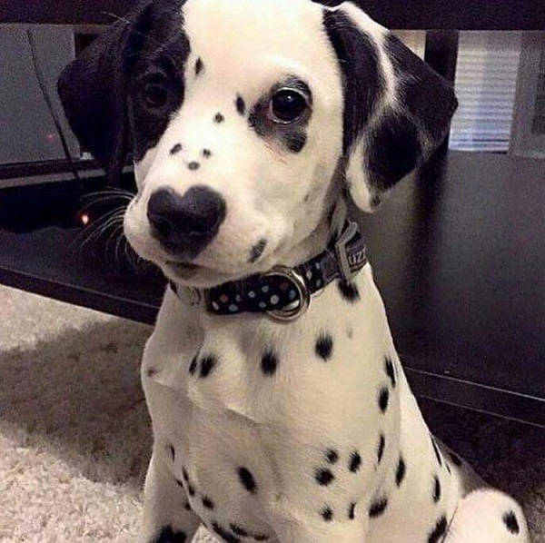
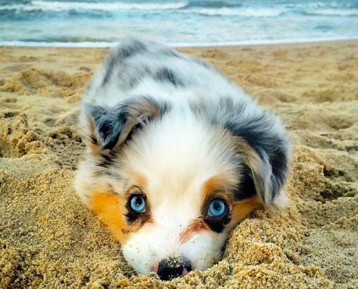
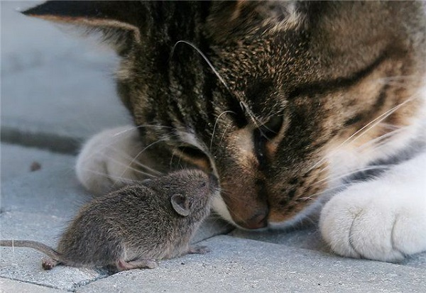

Sve za vaše kućne ljubimce na jednom mestu
Praktična veterina :
Krpelji - potencijalno velika opasnost vašim ljubimcima
Šta sve niste znali o krpeljima:
Krpelji ne lete, ne skaču i ne padaju sa drveća, već do svojih žrtava dolaze puzeći.
Karakteristika mnogih vrsta krpelja je da je njihova pljuvačka poput cementa. Naime, oni na taj način uspevaju da se učvrste na koži domaćina, zbog čega se teško uklanjaju.
{kind=link}
Ujed krpelja "Lone Star" može izazvati retku alergiju kod ljudi. Ova alergija može pogoditi i pse, kod kojih se ona manifestuje u vidu svraba, lezija po koži i gubitka dlake.
Iako na prvi mah može zvučati čudno,krpelji su bliži paukovima i škorpijama nego insektima.

Postoji oko 850 vrsti krpelja na svetu, neke od njih mogu prenositi bolesti kao što su Lajmska bolest.
Krpelji se više „kače“ na pse nego na mačke.
{kind=link}
Krpelji se generalno ne rađaju sa prenosivim bolestima, već ih zadobijaju tokom hranjenja i prenose ih na druge životinje.
Ljubimci mogu da zadobiju više bolesti od samo jednog krpelja.
{kind=link}
Nikada ne uklanjajte krpelja golim rukama, već koristite pincetu, uhvatite krpelja što bliže koži i pažljivo povućite.